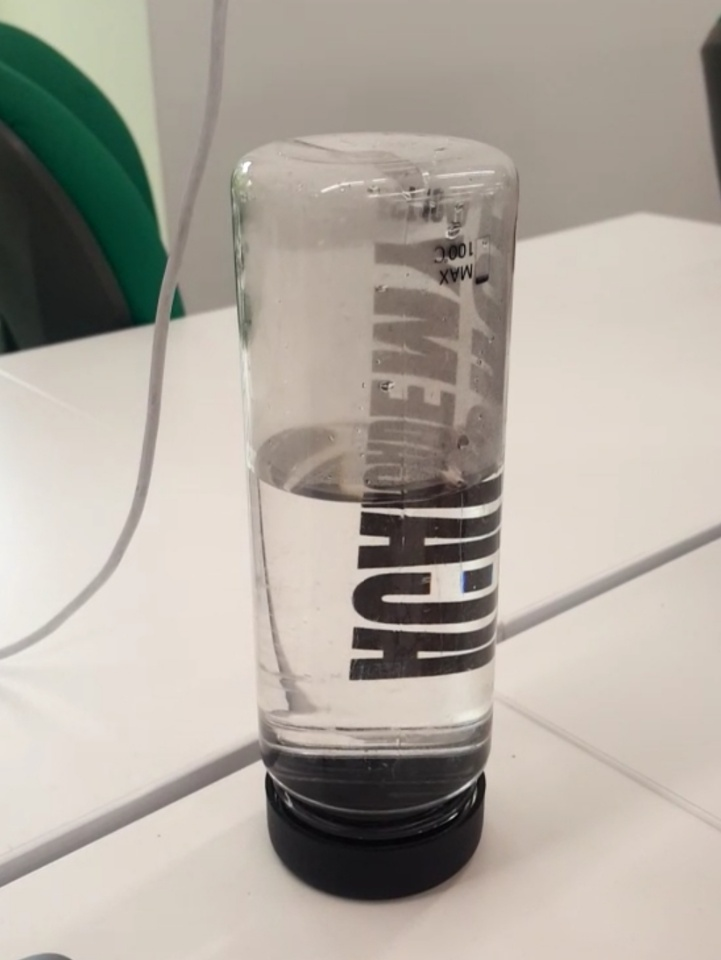
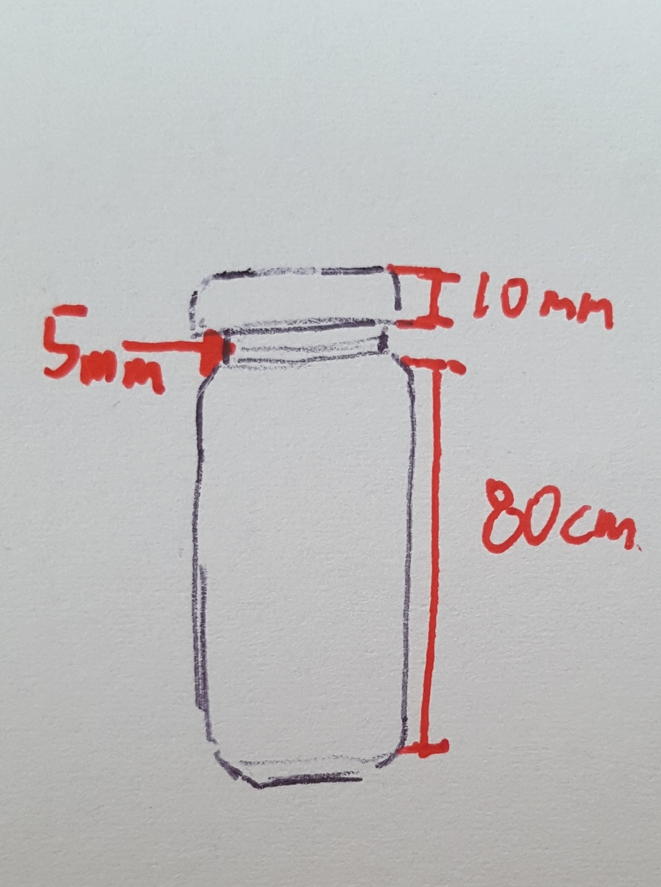
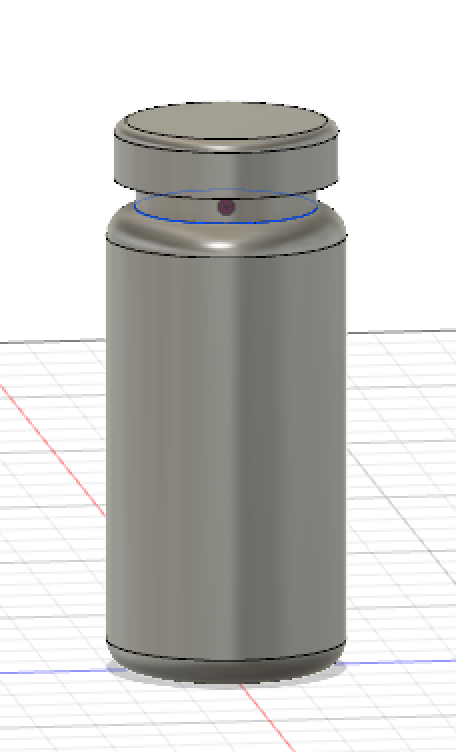
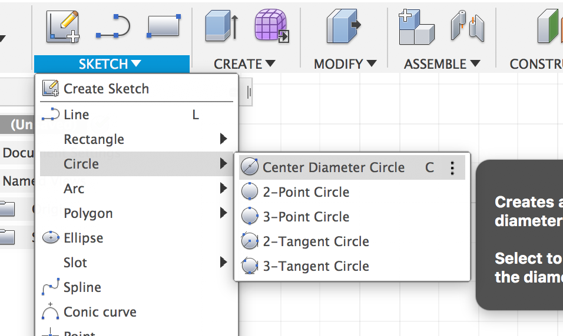
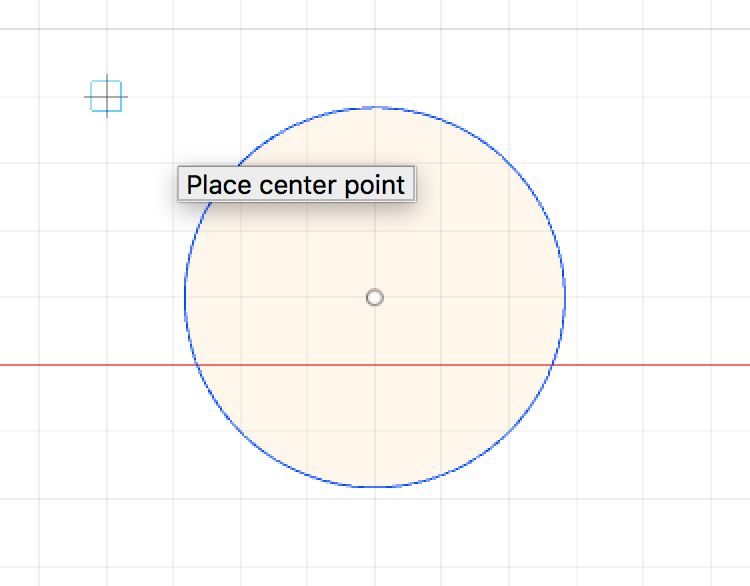
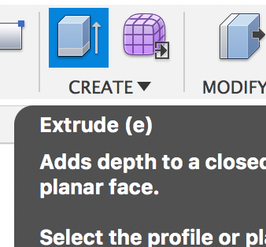
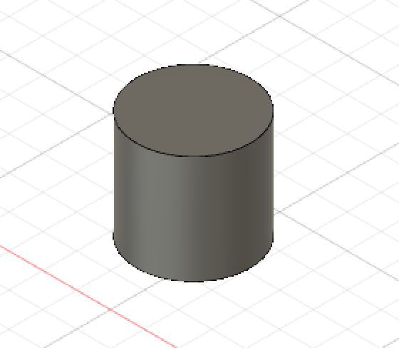
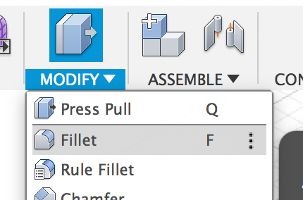
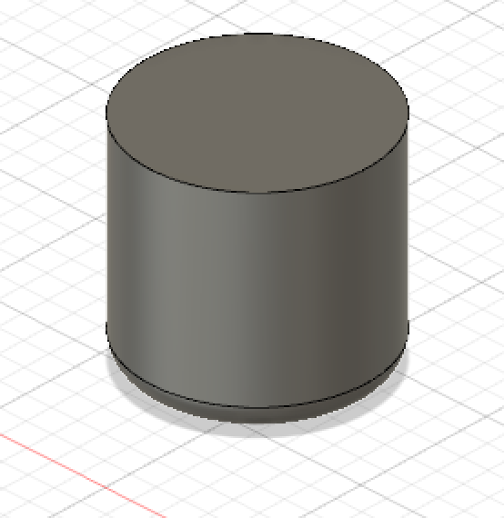

AutodiskFusion-計測して３ｄ作成
「ボトルを計測」
（何日か前壊れちゃっていい写真がありません。申し訳ありません。）
 
このボトルを計測しました。
計測結果- こうなりました！
この結果を基本として、３Dデーターを作っていきます。

作成した３dモデルです。
作成過程
１．sketch-circle-center diameter circle で 円を作る。

2. create で 円を選択し、上に伸ばして円筒にする。

3. modify-fillet で 円筒の隅っこを丸くする。

4. この課程を繰り返しながら、ボトルの首とふたもどんどん作っていく。
5. 完成。